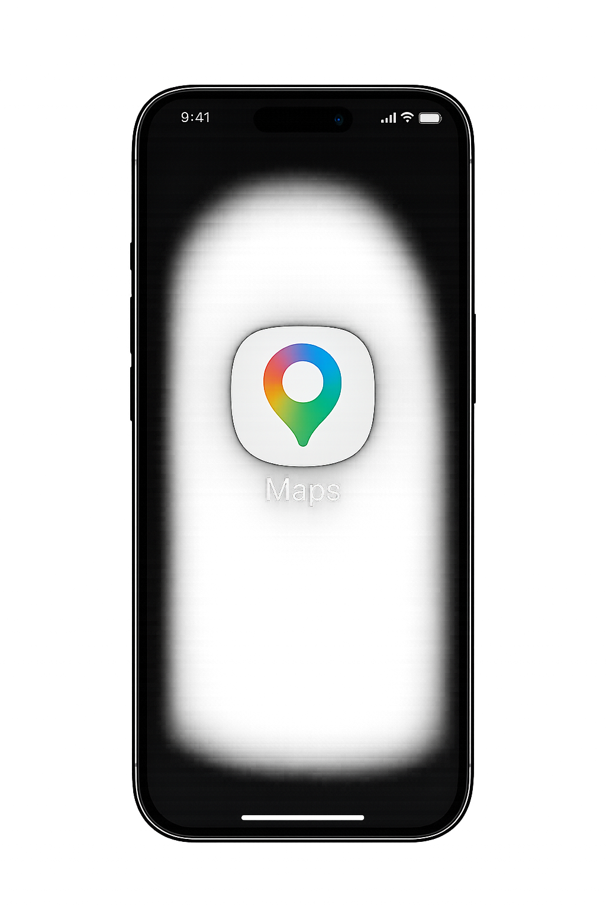
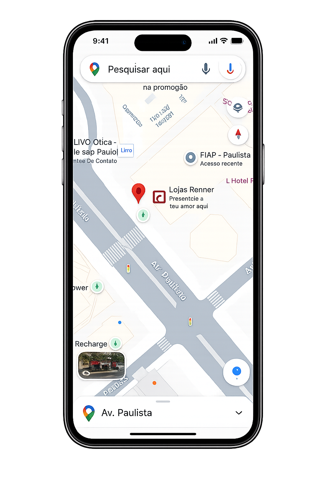
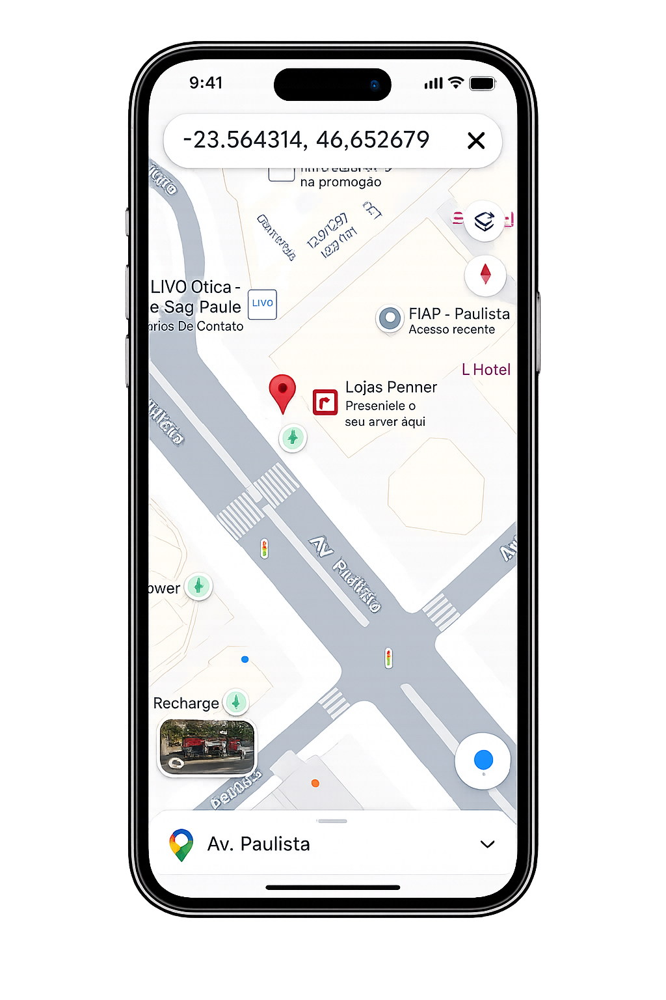
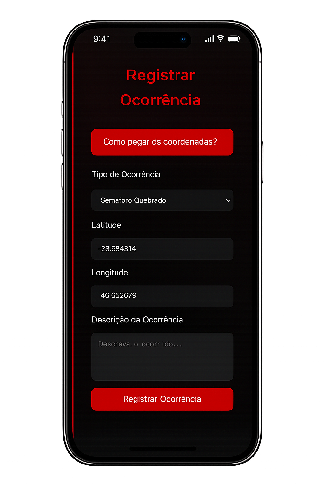

Para registrar uma ocorrência corretamente no mapa do SafeRoute, você precisa informar a latitude e a longitude do local.
Abra o Google Maps e pesquise o endereço desejado.

Clique com o botão direito exatamente sobre o local.

Clique nas coordenadas exibidas no menu.

Cole a primeira coordenada no campo Latitude e a segunda no campo Longitude do SafeRoute.
